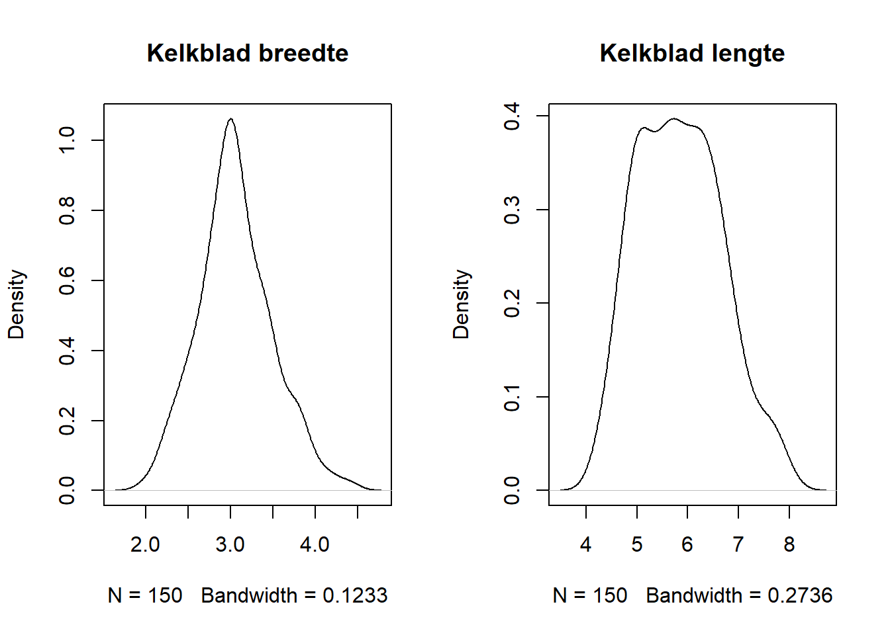
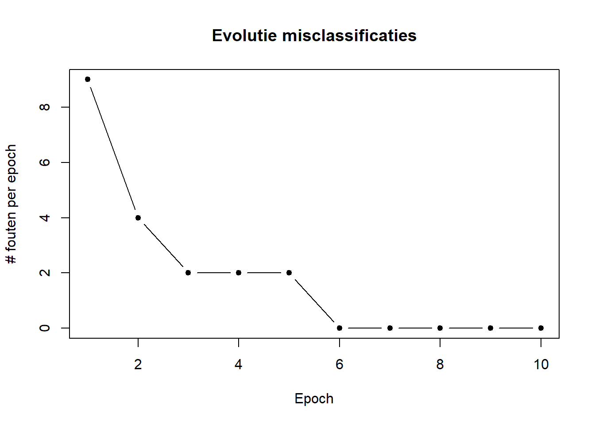
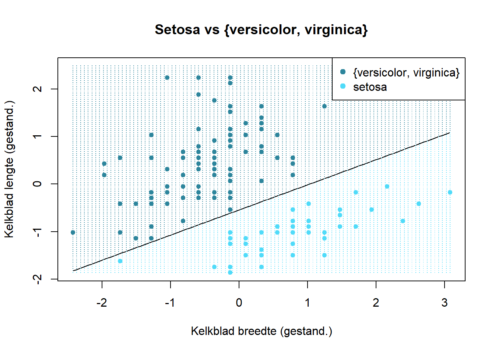

Hoofdstuk 6 De percetron
6.1 Historiek
De perceptron is gebaseerde op een wiskundige beschrijving van het dierlijk neuron. De uitvinding van de perceptron wordt toegekend aan Frank Rosenblatt die in 1957 een leeralgoritme programmeerde op een IBM 704 computer.

Figuur 6.1: IBM 704 mainframe. bron: Lawrence Livermore National Laboratory n.d.
In de New York Times van 8 Juli 1958 verscheen:
The Navy revealed the embryo of an electronic computer today that it expects will be able to walk, talk, see, write, reproduce itself and be conscious of its existence.
Al snel werd er hardware gemaakt om het algoritme efficiënt uit te voeren, de zogenaamde Mark I perceptron machine

Figuur 6.2: De Mark I perceptron machine, waarbij een matrix van 20 bij 20 cadmium sulfide fotocellen verbonden werden met een reeks potentiometers die de gewichten voorzien van de 400 invoer noden. bron: Cornell University Library n.d.
6.2 De anatomie van de perceptron
![De anatomie van het neuron en de overeenkomstige node van een neuraal netwerk. In het dierlijke neuron (boven) krijgt het cellichaam (eng: cell body) allerlei invoer van verscheidene locaties. In dit cellichaam vindt de integratie plaats (sommatie) en transformatie waarna het signaal (in de vorm van een zogenaamde actiepotentiaal) langsheen het axon reist naar het axon-uiteinde (eng: synaptic terminals). In een neuraal netwerk zijn de axon-uiteinden verbonden met de dendrieten (eng: dendrites) van een ander neuron. In een perceptron (onder) wordt de invoer (\(x\)) gewogen en geïntegreerd tot één getal (\(z\)) dat getransformeerd kan worden alvorens het wordt als uitvoer (\(y\)) wordt vrijgegeven. Bron: Commons 2013.](img/neuron.png)
Figuur 6.3: De anatomie van het neuron en de overeenkomstige node van een neuraal netwerk. In het dierlijke neuron (boven) krijgt het cellichaam (eng: cell body) allerlei invoer van verscheidene locaties. In dit cellichaam vindt de integratie plaats (sommatie) en transformatie waarna het signaal (in de vorm van een zogenaamde actiepotentiaal) langsheen het axon reist naar het axon-uiteinde (eng: synaptic terminals). In een neuraal netwerk zijn de axon-uiteinden verbonden met de dendrieten (eng: dendrites) van een ander neuron. In een perceptron (onder) wordt de invoer (\(x\)) gewogen en geïntegreerd tot één getal (\(z\)) dat getransformeerd kan worden alvorens het wordt als uitvoer (\(y\)) wordt vrijgegeven. Bron: Commons 2013.
Naar analogie met het biologisch neuron is de functie van een perceptron om complexe invoer om de ene of andere manier te reduceren tot één getal (\(z\); zie Formule (6.1)). Dit getal wordt soms de logit van een neuron genoemd.
\[\begin{equation} \mathbb{R}^n\rightarrow\mathbb{R}\\ z=g(x, \theta)=\sum_{i=0}^{n}{\theta_ix_i} \tag{6.1} \end{equation}\]
In een tweede functie, de zogenaamde activatiefunctie (eng: activation function), wordt dit resultaat nog eens getransformeerd tot de voorspelling \(\hat{y}\). Één voorbeeld van zulk een transformatie is het signum (eng:sign function):
\[\begin{equation} \hat{y}=t(z)= \begin{cases} -1\,als\,z<0\\ 1\,als\,z\geq0 \end{cases} \tag{6.2} \end{equation}\]
Er zijn tal van andere transformaties mogelijk.zoals de heaviside-functie die nul geeft indien \(z<0\) en 1 in alle andere gevallen.
6.3 Casestudy: Onderscheiden van setosa
De beste manier vaak om iets te begrijpen is om de code te zien, toch? Op basis van een vereenvoudigd voorbeeld gebaseerd op de blog van Simone Alberto Peirone (Peirone 2007) gaan we een leeralgoritme uit het niets opbouwen. Dit kan hier alleen omdat het om een uiterst eenvoudig leeralgoritme gaat, de perceptron.
In de beroemde iris dataset worden een aantal eigenschappen van drie sterk gelijkende iris soorten verzameld. We kwamen deze dataset eerder al tegen in het hoofdstuk rond model complexiteit.
Figuur 6.4: De drie soort van de iris dataset. Bron: Szczecinkowaty 2007, Mayfield 2005, Mayfield 2007.
Als we twee eigenschappen van de iris bloemen, namelijk de lengte (\(l\)) en breedte (\(b\)) van het kelkblad, tegenover elkaar uitzetten, dan kunnen we de setosa soort van de andere twee onderscheiden:
data(iris)
plot(Sepal.Length ~ Sepal.Width, data = iris, pch = 19, cex = .8,
col = 1 + (Species == "setosa"),
xlab = expression("Kelkblad breedte "~italic(b)~" (mm)"),
ylab = expression("Kelkblad lengte "~italic(l)~" (mm)"),
main = "Setosa vs {versicolor, virginica}")
legend("topright", c("{versicolor, virginica}", "setosa"),
col = 1:2, pch = 19)Figuur 6.5: Twee eigenschappen van iris bloemen (kelkblad lengte en breedte) tegenover elkaar uitgezet om een onderscheid te maken tussen Iris setosa en de twee andere soorten Iris versicolor en Iris virginica.
In dit twee-dimensionaal geval zouden we dat evengoed manueel kunnen doen, maar dit geldt niet voor hogere dimensies (i.e. méér variabelen). Daarom gaan we alsnog gebruik maken van een perceptron. We doen dit omdat het perceptron natuurlijk de eenvoudigste vorm van een neuraal netwerk is, maar weet dat een perceptron slechts in een beperkt aantal gevallen geschikt is.
6.4 De perceptron klasse
We gaan de perceptron in Python coderen, terwijl de resultaten in R zullen worden onderzocht (zie de § The R Language in de Appendix om te begrijpen waarom).
import numpy as np
class Perceptron:
def __init__(self, learning_rate = 0.1, iteration_count = 50):
self.learning_rate = learning_rate
self.iteration_count = iteration_count
self.theta_0 = 0.0
self.theta = None
self.errs = []De Perceptron klasse wordt geïnitialiseerd met de hyperparameters learning_rate en n-iter. De learning_rate (nl: leersnelheid) is een correctiefactor waarmee de gewichten \(\theta_i\) worden vermenigvuldigd indien de uitkomst van de instantie fout is. iteration_count geeft aan hoeveel cycli het leeralgoritme moet volbrengen. theta_0 en theta zijn de parameters en theta_0 is een constante \(\theta_0\) die aan de formule (6.1)) kan worden toegevoegd (zie Formule (6.3) en komt in het tweedimensionaal geval neer op een asafsnede (eng: intercept). Deze constante wordt echter meestal weggelaten omdat het erop neerkomt dat een extra berekende variabele \(x_0\) wordt toegevoegd, bestaande uit allemaal enen, waarvoor dan een overeenkomstige \(\theta_0\) wordt voorzien.
\[\begin{equation} g(x,\theta)=\theta_0+\sum_{i=1}^{n}{\theta_ix_i} \tag{6.3} \end{equation}\]
In de interne variabele errs worden het aantal fouten bewaard die bij elke cyclus gemaakt worden. Hiermee kunnen we het verloop van de performantie van het leeralgoritme opvolgen of achteraf reconstrueren.
Hoewel in bovenstaande code hier nog geen gebruik van wordt gemaakt, zorgt de geïmporteerde numpy module (onder alias np) ervoor dat er vlot met vectoren en matrices gerekend kan worden.
6.5 De perceptron functies
We zagen twee functies die de eigenlijke kern vormen van de perceptron: \(g\) en \(t\). Laten we deze als methoden toevoegen:
class Perceptron:
[...]
def g(self, x: np.array) -> float:
return np.dot(x, self.theta) + self.theta_0
def t(self, z: float) -> int:
return np.where(z >= 0.0, 1, -1)Met de np.dot functie berekenen we het inwendig product tussen de matrix \(x\) en de vector \(\theta\). Zie Appendix voor meer uitleg hierover.
6.6 Het leeralgoritme van de perceptron
De rest van de noodzakelijke code is a.h.w. van administratieve aard:
def fit(self, x: np.array, y: np.array):
self.theta = np.zeros(x.shape[1])
for iteration in range(self.iteration_count):
err_iter = 0
for xi, yi in zip(x, y):
update = self.learning_rate * (yi - self.t(self.g(xi)))
self.theta_0 += update
self.theta += update * xi
err_iter += int(update != 0.0)
self.errs.append(err_iter)Laten we de code even overlopen.
Voor elke instantie in de invoer matrix \(x\) wordt er een gewicht \(\theta_i\) voorzien en op nul geïnitialiseerd. shape geeft de dimensies terug van een matrix en de eerste waarde geeft het aantal rijen.
for iteration in range(self.iteration_count):
err_iter = 0
for xi, yi in zip(x, y):
# Updaten van de gewichten en aantal fouten tellen
self.errs.append(err_iter)Tijdens elke cyclus wordt het aantal foute voorspellingen binnen de cyclus bijgehouden. De zip functie plakt telkens de werkelijke uitkomst aan een instantie. In ons geval zal \(x_1\) bestaan uit de breedte van de kelkbladeren van de irissen en \(x_2\) de lengte van de kelkbladeren bevatten. Dus, stel breedte = 3.5mm, lengte = 5.1mm en soort = setosa, dan verwachten we de eerste keer dat de compiler in de lus python for xi, yi in zip(x, y): terecht komt de volgende waarden:
Binnen in deze lus, wordt er berekend met hoeveel de parameters moeten worden verminderd:
Stel dat het leeralgoritme voor een bepaalde instantie 1 voorspelt, maar dat de werkelijke uitkomst -1 is, dan worden de parameters vermeerderd met de fractie
hetgeen overeenkomt met \(0.1\cdot\left(-1\cdot-1\right)=-0.2\) voor een leersnelheid van \(0.1\). Met andere woorden, de parameters worden verminderd met één vijfde van hun waarde. Stel nu dat het leeralgoritme het juist had, dan wordt update gelijkgesteld aan \(0.1\cdot\left(1\cdot-1\right)=0\) en blijven de parameters onveranderd.
En dit was het! Hier is de volledige werkende Python code:
import numpy as np
class Perceptron:
def __init__(self, learning_rate = 0.1, iteration_count = 10):
self.learning_rate = learning_rate
self.iteration_count = iteration_count
self.theta_0 = 0.0
self.theta = None
self.errs = []
def g(self, x: np.array) -> float:
return np.dot(x, self.theta) + self.theta_0
def t(self, z: float) -> int:
return np.where(z >= 0.0, 1, -1)
def fit(self, x: np.array, y: np.array):
self.theta = np.zeros(x.shape[1])
for iteration in range(self.iteration_count):
err_iter = 0
for xi, yi in zip(x, y):
update = self.learning_rate * (yi - self.t(self.g(xi)))
self.theta_0 += update
self.theta += update * xi
err_iter += int(update != 0.0)
self.errs.append(err_iter)6.7 Trainen van de perceptron
De tijd is aangebroken om de perceptron te trainen met de data van de iris bloemen. Het enige wat we nog willen doen is de invoergegevens standaardiseren, i.e. de zogenaamde Z-score berekenen. Let wel deze Z heeft niets te maken met de \(z\) (de logit) die we eerder zagen.
\[\begin{equation} Z=\frac{x_j-\mu_j}{\sigma_j} \tag{6.4} \end{equation}\]
Elke variabele \(x_j\) wordt in dit process eerst verminderd met het gemiddelde voor die variabele \(\mu_j\) en daarna gedeeld door de standaardafwijking van die variabele \(\sigma_j\). Wat de Z-score in feite doet is elke waarde transformeren naar het aantal standaardafwijkingen het verwijderd is van het gemiddelde.
De reden dat we de standaardisatie uitvoeren is omdat de lengte en de breedte van de kelkbladen een andere schaal hebben en daar kan dit eenvoudige leeralgoritme moeilijk mee overweg. Maar opgelet, het nemen van het gemiddelde en de standaardafwijking van een feature veronderstelt dat deze zich (toch ongeveer) normaal verdeeld. In de paragraaf over Univariate verdelingen staat beschreven hoe we een verdeling snel visueel kunnen controleren:
par(mfrow = 1:2)
iris$Sepal.Width %>% density %>% plot (main = "Kelkblad breedte")
iris$Sepal.Length %>% density %>% plot (main = "Kelkblad lengte")
Toegegeven, de verdelingen wijken enigszins af van de normaalverdeling, maar het belangrijkste is dat beide variabelen ten minste unimodaal zijn, i.e. één ‘piek’ bezitten in hun verdeling. Dus een standaardisatie lijkt gelegitimeerd. De onderstaande code verzamelt de invoer en de uitkomsten en voert de standaardisatie door in R met de functie base::scale:
x_all <- iris[, c("Sepal.Width", "Sepal.Length")] %>%
as.matrix %>% scale
y_all <- (2 * (iris$Species == "setosa")) - 1
x_all %>% cbind(y_all) %>% head## Sepal.Width Sepal.Length y_all
## [1,] 1.01560199 -0.8976739 1
## [2,] -0.13153881 -1.1392005 1
## [3,] 0.32731751 -1.3807271 1
## [4,] 0.09788935 -1.5014904 1
## [5,] 1.24503015 -1.0184372 1
## [6,] 1.93331463 -0.5353840 1Er rest nu alleen nog het algoritme te trainen. Hiervoor gaan we de invoer data randomiseren in een training- en een test-set in de verhouding \(3:1\).
from sklearn.model_selection import train_test_split
x_train, x_test, y_train, y_test = train_test_split(
r.x_all, r.y_all, test_size = 0.25, random_state = 42)De eigenlijke training gebeurt als volgt:
Laten we eens kijken hoe het aantal mis-classificaties evolueerde over de verschillende cycli (deze cycli worden in ANN-wereld epochs genoemd):
py$model$errs %>% plot(type = "b", pch = 19, cex = .8,
ylab = "# fouten per epoch", xlab = "Epoch",
main = "Evolutie misclassificaties")
Nu kunnen we de scheidingslijn in beeld brengen. Eerst maken we een raster. Voor elke punt in dit raster zullen we een voorspelling maken:
x1_lim <- x_all[, 1] %>% range
x2_lim <- x_all[, 2] %>% range
grid_x <- seq(x1_lim[1], x1_lim[2], l = 100)
grid_y <- seq(x2_lim[1], x2_lim[2], l = 100)
grid <- expand.grid(x = grid_x, y = grid_y) %>% as.matrix
grid_z <- py$model$t(py$model$g(grid))Nu plotten we de (gestandaardiseerd) data met de scheidingslijn (eng: boundary line) en duiden we de gebieden aan die, volgens het model, tot Iris setosa behoort of niet:
plot(x_all[, 2] ~ x_all[, 1], pch = 19, cex = .8,
col = 1 + (iris$Species == "setosa"),
xlab = "Kelkblad breedte (gestand.)",
ylab = "Kelkblad lengte (gestand.)",
main = "Setosa vs {versicolor, virginica}")
curve((py$model$theta[1] * x + py$model$theta_0) / -py$model$theta[2], add = TRUE)
points(grid[, 1], grid[, 2], pch = ".", col = 1 + (1 + grid_z) / 2)
legend("topright", c("{versicolor, virginica}", "setosa"),
col = 1:2, pch = 19)
Merk nog eens op dat het resultaat van ML inderdaad een functie is. In dit geval moet je de twee functies \(f\) en \(t\) achtereenvolgens uitvoeren. In de praktijk worden beide meestal verpakt in een functie predict, maar hier is ervoor gekozen om de functies gescheiden te houden, kwestie om de relatie te behouden met de Formules (6.1) en (6.2).
Bronvermelding
Commons, W., 2013. Multipolar neuron [WWW Document] [Online; accessed 2020-09-07]. URL https://upload.wikimedia.org/wikipedia/commons/1/10/Blausen_0657_MultipolarNeuron.png
{kind=link}
Cornell University Library, n.d. IBM 704 mainframe [WWW Document] [Online; accessed 2020-09-29]. URL https://upload.wikimedia.org/wikipedia/en/5/52/Mark_I_perceptron.jpeg
Lawrence Livermore National Laboratory, n.d. IBM 704 mainframe [WWW Document] [Online; accessed 2020-09-29]. URL https://commons.wikimedia.org/wiki/File:IBM_704_mainframe.gif
{kind=link}
Mayfield, F., 2007. Image of iris virginica shrevei at the james woodworth prairie preserve - a bud and a single flower at full bloom [WWW Document] [Online; accessed 2020-09-07]. URL https://commons.wikimedia.org/wiki/File:Iris_virginica.jpg
{kind=link}
Mayfield, F., 2005. Blue flag flower close-up (iris versicolor) at the forillon national park of canada [WWW Document] [Online; accessed 2020-09-07]. URL https://commons.wikimedia.org/wiki/File:Iris_versicolor_3.jpg
{kind=link}
Peirone, S.A., 2007. Image of iris setosa in botanical garden in poznań [WWW Document] [Online; accessed 2020-09-07]. URL https://commons.wikimedia.org/wiki/File:Kosaciec_szczecinkowaty_Iris_setosa.jpg
{kind=link}
Szczecinkowaty, K., 2007. Image of iris setosa in botanical garden in poznań [WWW Document] [Online; accessed 2020-09-07]. URL https://commons.wikimedia.org/wiki/File:Kosaciec_szczecinkowaty_Iris_setosa.jpg